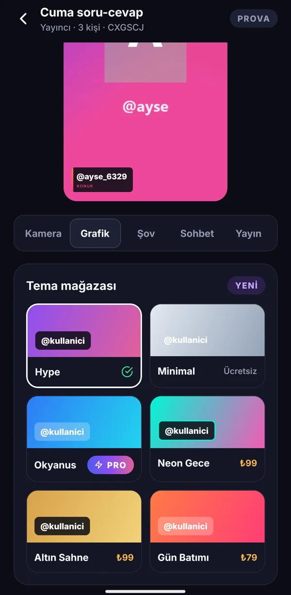

◉
Çok kameralı reji
Tek ve bölünmüş ekran, Tek kişi · Röportaj · Soru-cevap · Şov düzenleri. Kameraya dokun, yayına alsın; sessize al, çıkar, kalıcı engelle. Yönetmen her kameranın batarya, ağ kalitesi ve şehir bilgisini görür.

Sürüm 1.4 · Ekip yayını ve gecikmeli yayın
Kodu paylaş; takipçilerin, ekibin, hatta dronun ve OBS'in kamera olarak bağlansın. Kimin yayında olacağını telefondan ya da web panelden sen seç — görüntü grafiklerle birlikte YouTube, Instagram, TikTok ve daha fazlasına aynı anda gitsin.


CANLI YouTube · TikTok · Instagram
4 kamera bağlı · 10 sn gecikme
Bir yayının akışı
Ekranlar doğrudan uygulamadan. Dekor yok, kurgu yok.

Yayına ad ver; 6 haneli davet kodu hazır.

Hikâyede, WhatsApp'ta ya da yayın ekranında QR olarak.

Takipçi sıraya girer; ekip üyesi doğrudan bağlanır.

Kameraya dokun, program geçsin. İsim bandı kendiliğinden çıkar.

Yayın biter, özet kartı ve dikey klipler paylaşıma hazır.
Özellikler
Tek ve bölünmüş ekran, Tek kişi · Röportaj · Soru-cevap · Şov düzenleri. Kameraya dokun, yayına alsın; sessize al, çıkar, kalıcı engelle. Yönetmen her kameranın batarya, ağ kalitesi ve şehir bilgisini görür.
5, 10 ya da 20 saniye gecikmeyle yayınla. Uygunsuz bir an olursa tek tuşla tampon atılır, yayın “kısa ara” ekranıyla kesintisiz sürer.
Yayında olmayan biri konuşmaya başlarsa “@ali konuşuyor → Geç” kartı çıkar. Otomatik yönetmen kişi ve süre adımlarıyla döngüde kamera değiştirir.
Harici kameraları RTMP ile bağla: dron, aksiyon kamerası, sahne kamerası ya da bilgisayardan OBS. Webcam ile tarayıcıdan katılmak da mümkün.
“Aynı ortam” ve “Tek mikrofon” modlarında yalnızca seçilen mikrofon yayına gider. Uğultu, geri besleme yok.
Logo, alt bant, kayan yazı, sponsor bandı, tema mağazası. Canlı anket, quiz ve puan tablosu, uçan emojiler, ürün vitrini, ekranda QR, konuk süresi, “sıradaki sensin” uyarısı, jingle ve ses efektleri. Başlıyoruz / mola / bitti sahneleri.

Önemli anı işaretle (H tuşu ya da dokunuş): 40 saniyelik klipler 9:16, 1:1, 16:9 olarak çıkar. Sessizlikleri atılmış 3 dakikalık özet video da hazırlanır.
Grafikli tam kayıt ve kamera başına ayrı (ISO) kayıt. Telefona indir; sunucuda 24 saat sonra kendiliğinden silinir. Zaman kodlu kurgu notları ve YouTube bölümleri.
Takipçiler canlıya çıktığında bildirim alır; planlanan yayın için 15 dk önce hatırlatma gider. Herkese açık profil sayfasında tekrar izleme ve klipler.
Ekip & web yönetmen paneli
Ekip üyeleri kodsuz ve bekleme odasız bağlanır. Yönetici ana yayını telefondan ya da bilgisayardaki web panelden yönetir, kendi bağlı hesaplarından tüm platformlara açar.

Quiz: konuklar telefondan cevaplar, puan tablosu yayında.

Konuklar için
Linke ya da yayındaki QR'a dokunan takipçi tarayıcıda adını yazar, onay verir ve kamerasıyla sıraya girer. Yayındayken tepki gönderir, ankete oy verir, quiz'e cevap verir.
Paketler
Ödemeler PayTR ile güvenli. Yıllık alımda iki ay hediye.
₺0
₺699/ay
yıllık ₺6.990
₺2.999/ay
yıllık ₺29.990
Ajans mısın? Birden çok yayıncıyı tek panelden izle, toplu rapor ve CSV al. Bize yaz →
Sık sorulanlar
Hayır. Uygulaması olan kodla girer; olmayan, paylaştığın linke ya da yayındaki QR'a dokunup tarayıcıdan kamerasıyla katılır.
Yayın platformlara birkaç saniye geç gider. Bu sürede uygunsuz bir şey olursa ACİL KES ile o an hiç yayınlanmaz; yayın “kısa ara” ekranıyla devam eder.
Evet. Web yönetmen paneli tarayıcıda açılır; kameraları görür, klavyeyle geçiş yapar, grafikleri ve yayını yönetirsin. Telefonun odadan düşmez.
Platformun verdiği yayın adresini ve anahtarını bir kez hesabına kaydedersin; sonraki yayınlarda tek dokunuşla açılır. YouTube'a doğrudan çıkılır.
Kayıt ve klipler sunucuda 24 saat durur, sonra silinir. Bu sürede telefonuna indirebilirsin.
Yayıncı uygulaması şu an Android'de. iPhone kullanan konuklar tarayıcıdan katılabilir.
Android uygulamasını indir, hesabını aç, profilini kur. İki dakikada hazırsın.
Sürüm 1.4.0 · Android 8 ve üzeri · Google Play yakında